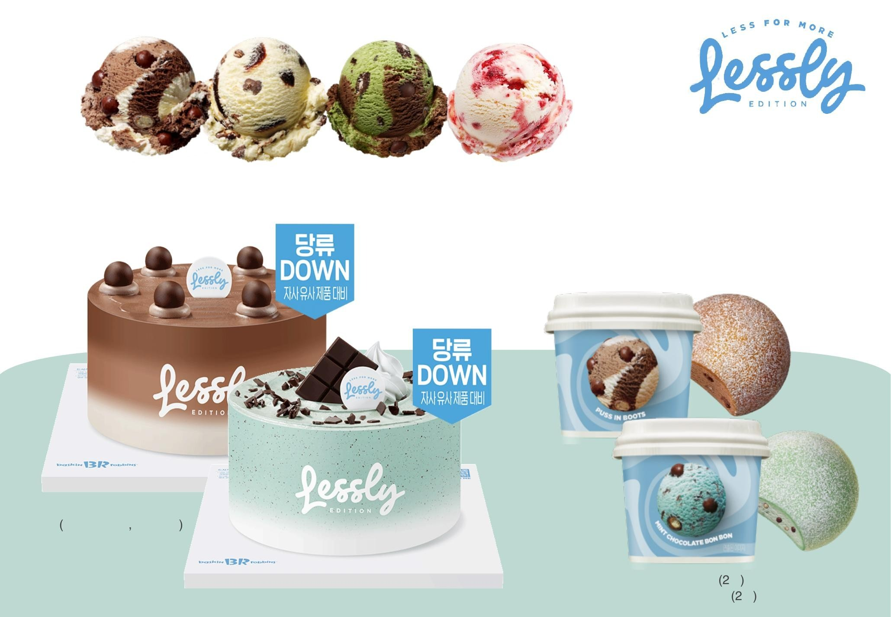
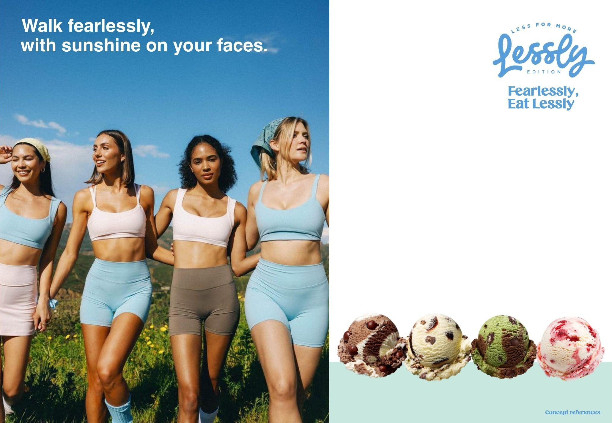
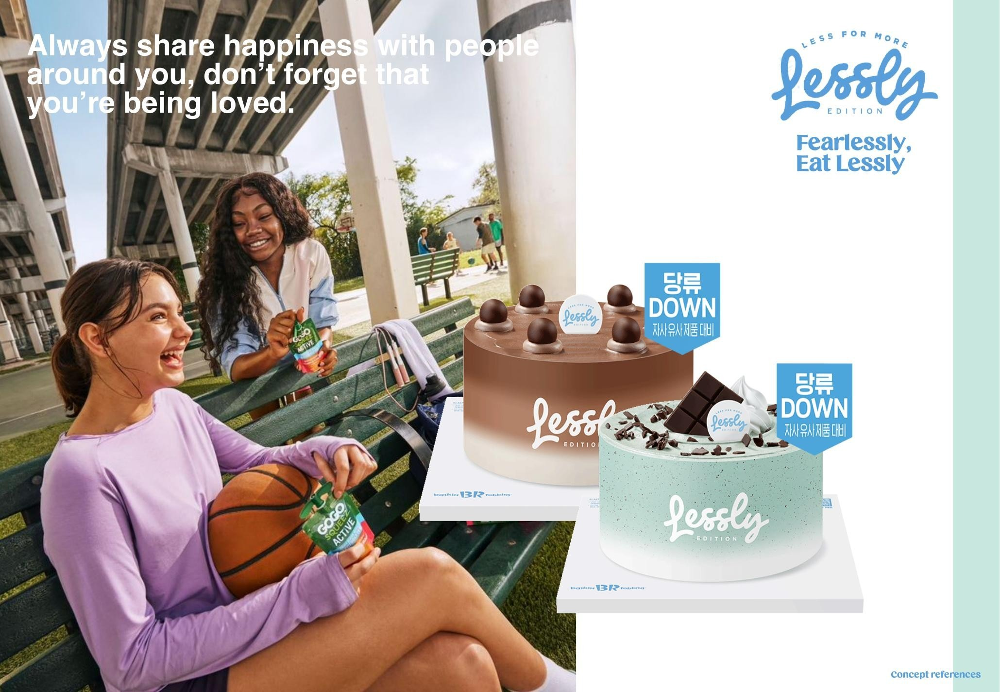

Baskin-Robbins Korea배스킨라빈스 코리아
LE SSERAFIM × Baskin-Robbins르세라핌 × 배스킨라빈스
Casting as strategy — an artist chosen for what her work already means.캐스팅이 곳 전략. 도달률이 아니라 이미 가진 의미로 고른 아티스트.


- Client클라이언트
- Baskin-Robbins Korea배스킨라빈스 코리아
- Location장소
- Seoul, Korea서울
- Year연도
- 20252025
- Role역할
- Creative Marketing Team Lead크리에이티브 마케팅 팀장
- Scope범위
- Campaign concept, concept boards, styling direction, photography art direction캠페인 컨셉, 컨셉보드, 스타일링 디렉션, 화보 아트디렉션
LE SSERAFIM’s catalogue rests on one claim — that you are already enough. So the artist’s own line became the brand’s, turned outward: I’m good enough to you’re good enough.
Three concept directions — Sporty & Healthy, Sweet Winter Salon, Romantic Holiday — carried through member-by-member styling to the shoot. The low-sugar line launched under Fearlessly, Eat Lessly.
르세라핌의 음악은 하나를 말합니다. 너는 이미 충분하다는 것. 그래서 아티스트의 문장을 브랜드의 문장으로 뒤집었습니다. I’m good enough에서 You’re good enough으로.
컨셉 3안 — Sporty & Healthy, Sweet Winter Salon, Romantic Holiday — 을 멤버별 스타일링까지 끌고 가 촬영으로 연결했고, 저당 라인은 Fearlessly, Eat Lessly로 런칭했습니다.
Art direction and concept development by Ahran Won. Artist imagery © Baskin-Robbins Korea and the respective rights holders.아트디렉션·컨셉 원아란. 아티스트 이미지 © 배스킨라빈스 코리아 및 각 권리자.





The work is deciding which artist a brand should stand next to, and why.진짜 일은 브랜드가 누구 옆에 설 것인가, 그리고 왜인가를 정하는 것입니다.